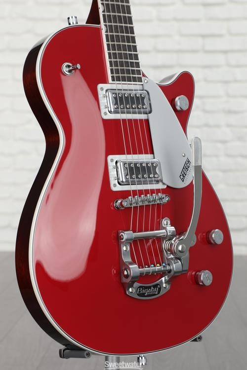

This is my Assignments page
My name is Sid Al Hussaini.
I study music at McGill University
I like all kinds of music, ranging from various genres like rock, indie, alternative, etc.

MUSR 300: Intro to Sound Recording
MUMT 301: Music and the Internet
MUSP 354: Introduction to Improvisation and Ornamentation
SOCI 210: Sociological Perspectives
SOCI 235: Technology and Society